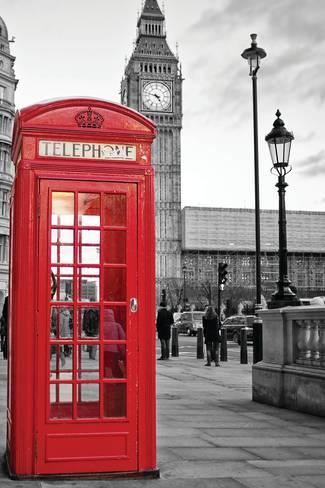
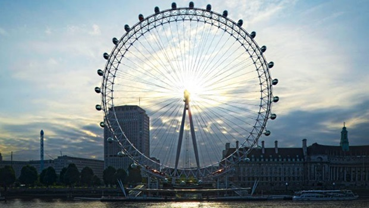
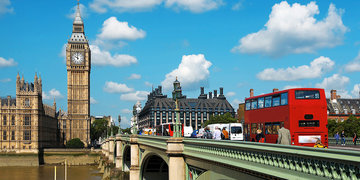
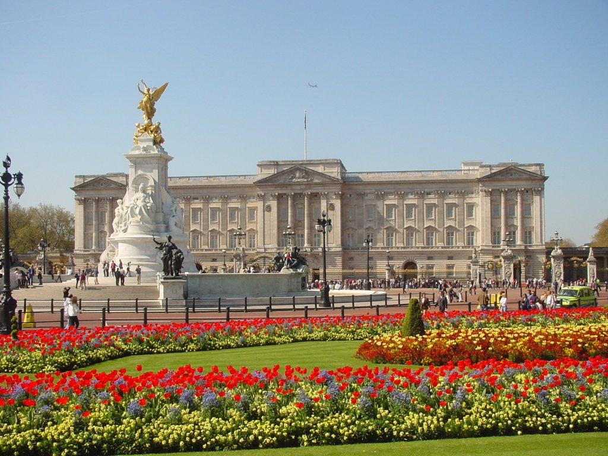
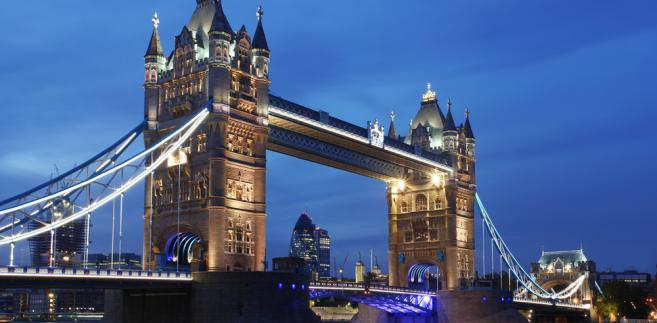

Wielka brytania
43 – 1065:
Rzymianie założyli Londyn i wybudowali drogi wojskowe w całym kraju.Wpływy rzymskie utrzymały się w Wielkiej Brytanii do V wieku aż do przejęcia przez Brytów panowanie nad wyspą.
1066 –1347
W 1066 normandzki Książe Wilhelm pokonał w bitwie pod Hastings króla Anglii Harolda.Wilhelm Normandzki przejął panowanie w Anglii i Szkocji.Językiem oficjalnym stał się francuski. W 1216 ukoronowano Henryka III.
1485 – 1713
W 1485 roku Henryk Tudor pokonał Ryszarda III, przejmując władzę. Nowy władca poślubił Elżbietę York – córkę Edwarda VI.
1714 - 1836
Po śmierci Anny królem został Jerzy I.Choć termin „premier” w tamtych czasach nie był w użyciu, Sir Robert Walpole pełnił rolę typowego premiera.
1837 - 1900
Wiktoria – najdłużej panujący brytyjski monarcha – została królową w roku 1837, mając zaledwie 11 lat.
1901 - 1944
Największymi osiągnięciami tamtych czasów były: wynalazek telewizji przez EMI-Marconi Corporation i założenie w następstwie tego BBC, wynalazek penicyliny przez Aleksandra Fleminga, poznanie budowy atomu, co doprowadziło do rozwoju broni oraz energii nuklearnej.
1945 - 2010
W roku 1945 po raz pierwszy wybory wygrała Partia Pracy.
Rodzina Królewska
Panuje niepisana zasada, że do rodziny królewskiej zalicza się:
monarchę brytyjskiego (król lub królowa), jego małżonkę/małżonka, owdowiałych małżonków poprzednich monarchów (jak np. Elżbieta, królowa matka)
dzieci monarchy oraz wnuki monarchy w linii męskiej (książęta i księżniczki)
małżonki i owdowiałe małżonki synów monarchy oraz wnuków monarchy w linii męskiej (nie dotyczy małżonków monarszych córek lub wnuczek)
przed rokiem 1917 także prawnuki monarchy w linii męskiej nosiły królewskie tytuły – oraz małżonki tych książąt, jednak nie małżonkowie księżniczek.
Obecna Królowa
Elżbieta II
jest najdłużej panującym monarchą Wielkiej Brytanii.
panowania-od 6 lutego 1952
koronacja-2 czerwca 1953
Mąż królowej Elżbiety II
Książe Filip urodziłm sięm 10 czerwca 1921 na Korfu
Ożenił się 20 listopada 1947
Dzieci ElżbietayII
Karol Filip Artur Jerzy urodził się 14 listopada 1948 w Londynie
Anna urodziła się 15 sierpnia 1950 67 lat, Clarence House, St James's, Wielka Brytania
Andrew Albert Christian Edward 19 lutego 1960 58 lat, Buckingham Palace, Londyn, Wielka Brytania
Edward Antoni Ryszard Ludwik,10 marca 1964 54 lata, Buckingham Palace, Londyn, Wielka Brytania
ggggggrrrrr




